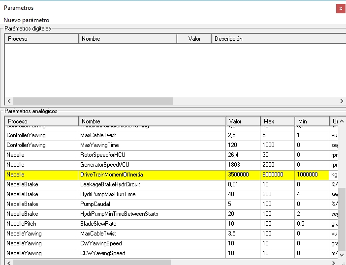

Objective: To analyze how the system's moment of inertia affects the acceleration and deceleration of the rotor.
What to observe: Evolution of rotor speed in response to changes in wind or setpoints.
What to note: Response time, smoothness of transition, and presence of oscillations.
💡 Compare scenarios with different moments of inertia while keeping other variables constant.
In this practical, we explore the concept of "moment of inertia" and experiment with changes in its value.
The physical concept of "moment of inertia" applies to rotating mechanical systems and is analogous to "mass" in moving mechanical systems. It has to do with the resistance to change in the rotational speed of a mass rotating around an axis.
In the case of a wind turbine, the power train assembly is the part with the highest moment of inertia, mainly due to the blades (which weigh tons). It can change due to a change in the blade model, or due to other events, such as ice deposits on the blades.
In this exercise, we will see the influence of the moment of inertia value on the time it takes for the wind turbine to reach cutout. To do this, we will conduct experiments changing this value using the "Nacelle.DriveTrainMomentOfInertia" parameter. Access the "Parameters" screen.

Fig. 1.
Experiment 1 - With the default value.
1. Make sure the wind turbine is disconnected from the grid.
2. Set a moderate wind speed (e.g., 9 m/s).
3. Display a recorder with the "Cutin + Cutout + Production" panel (see How to display a recorder and choose a predefined panel in it). Set
4. Ensure that there are no open incidents, except for "Manual STOP."
5. Press "START." You will see a progression similar to that shown in the following figure. 
Fig. 1.
If you press the "Copy" button, another synoptic will appear as shown in the following figure. The main difference is that, in the latter, there is a procedure for "measuring distances in time."
Fig. 2.
When you move the mouse over this synoptic, the blue line will move. You can set the time origin at any point with the right mouse button: "Set as time reference." Fig. 3.
Fig. 3.
From that moment on, you will see the distance in time between the point where the mouse is at that moment and the point chosen as a reference. See the following figure.
6. Note that, in this case, the elapsed time is 45.6 seconds.
Experiment 2: with a higher moment of inertia value.
Repeat experiment 1, but first change the moment of inertia to a higher value. With a value of 6000000, you will obtain the following signal evolution.

In this case, the time from brake release to production is 59.6 seconds.